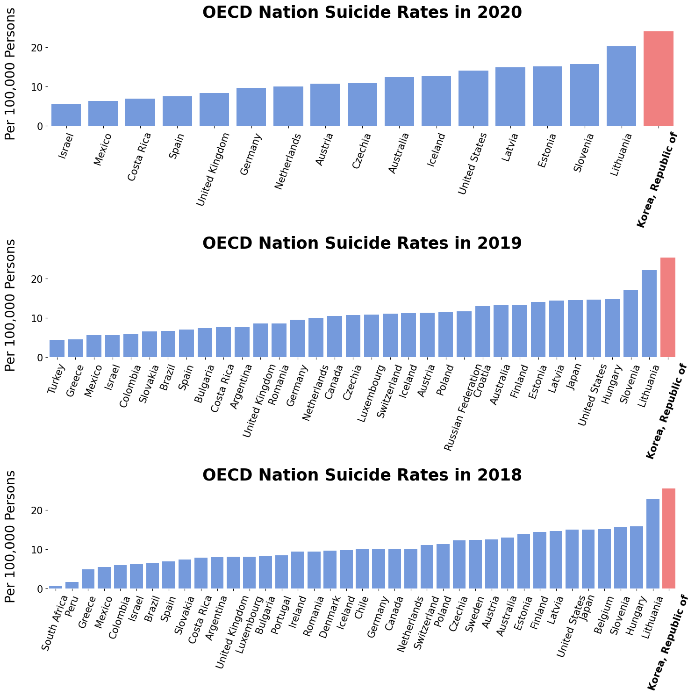

This page is inspired by the article from The Diplotmat Page.
Data used for this page can be found at OECD Official.
💵 Rich South Korea, Unhappy Koreans 😢
South Korea is well recognized for its remarkable economic growth development during the post-war period.
From being one of the poorest countries in the world after the Korean War in the 1950s, Korea has developed into a wealthy, industrializaed nation with one of the fastest-growing GDPs in the world along
strong cultural influence.
With major industries in technology, automotive, and electronics, South Korea has produced global brands such as Samsung, LG, and Hyundai, and has become a model for many developing countries with similar background or resources.
However, despite its impressive economic achievements, South Korean citizens report some of the lowest levels of happiness and life satisfaction among advanced economies.
This raises the question of whether wealth and economic growth are enough to ensure the well-being of a nation.
Visualization Disclaimer: According to OECD official, the total fertility rate in a specific year is defined as the total number of children that would be born to each woman if she were to live to the end of her child-bearing years and give birth to children in alignment with the prevailing age-specific fertility rates.
OECD reports that fertility rate of 2.1 ensures a broadly stable population. The visualization above displays
the trend of fertility rate in Korea, Japan, China, and United States. These countries have been selected for comparison as they all have either historical or
geographical connection to South Korea. Although the line plot suggests a general decreasing trend, South Korea has the
lowest fertility rate of 0.81 as of 2021. South Korea, among the OECD countries, is the only nation with a fertility rate below 1.0. Many studies suggests that the
low fertility rate is due to exponential increase of house price, constant decrease in unemployment rate, and lack of government policies for childcare. Hence, we
can infer the difficulties of Koreans from analyzing the fertility rate, which further convinces the low happiness score despite its wealthy economy.

Visualization Disclaimer: Although not officially stated by the OECD, we can assume that the year 2020 has less countries due to the COVID-19 global pandemic.
The barchart on the right shows OECD nation's suicide rates (per 100,000 persons) of the years 2018, 2019, and 2020.
It is difficult to say why the rate is so high in Korea, but some hypotheses can be made.
South Korea, compared to any other countries, has the
highest academic competitions. The Korean College Scholastic Ability Test is held once every year, and determines thousands of students' life. Hence, a lot of pressure
is on the individuals, and unfortunately leads to some serious depression and anxiety.
Korea is also suffering from wealth polarization due to its exponential growth in the past. Issues of unemployment and housing price has never been
this severe. Hence, many young adults use the abbreviated phrase "isaengmang" which literally means "this life is ruined" to express their difficulties.
In conclusion, the visualizations presented suggests potential factors that may influence South Korea's happiness scores negatively. This
shows that a nation's happiness is determined by so many variables that are not included in our project dataset. We should also stress the importance of
drawing causal inference between a nation's wealth and happiness score. Hence, a relatively low happiness score in South Korea may not be unreasonable
considering their circumstances.
Recommended Video References